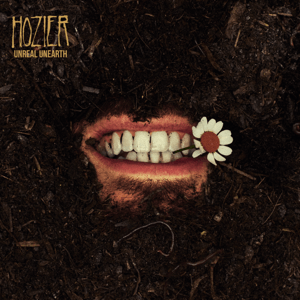
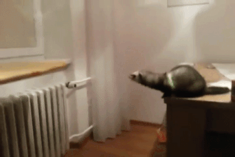

₊‧.°.⋆Abstract•˚₊‧⋆.
Sometimes it returns. Like rain that you slept through that washed off the world. The streets looking brand new. I will not be great, but I'm grateful to get through. The feeling came late. I'm still glad I met you. The memory hurts, but does me no harm. Your hand in my pocket to keep us both warm. The poor thing in the road. Its eye still glistening, the cold wet of your nose, the Earth from a distance. See how it shines! See how it shines!
₊‧.°.⋆First light•˚₊‧⋆.
One bright morning changes all things. Soft and easy as your breathing, you wake. Your eyes open, at first a thousand miles away but turning, shoot a silver bullet point-blank range. And I can scarce believe what I'm believing in. Could this be how every day begins? The sky set to burst, the gold and the rust, the colour erupts, you filling my cup, the sun coming up. Like I lived my whole life before the first light.
₊‧.°.⋆Unknown / Nth•˚₊‧⋆.
You called me angel for the first time, my heart leapt from me. You smile now, I can see its pieces still stuck in your teeth. And what's left of it, I listen to it tick. Every tedious beat going unknown as any angel to me. Do you know, I could break beneath the weight of the goodness, love, I still carry for you? That I'd walk so far just to take the injury of finally knowing you.
˚₊♡ OSTALA MULTIMEDIJA ♡₊˚
 